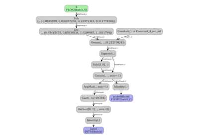
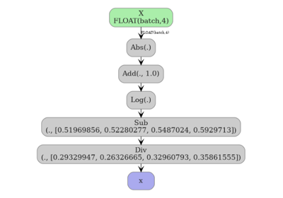
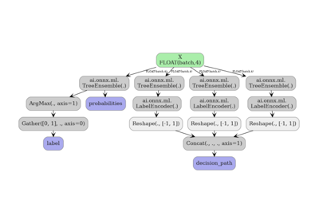

Scikit-learn Gallery#
Examples about converting scikit-learn estimators and pipelines to ONNX.



Converting a scikit-learn model to ONNX with spox
Converting a scikit-learn model to ONNX with spox

Exporting FunctionTransformer with numpy tracing
Exporting FunctionTransformer with numpy tracing

Exporting sklearn estimators as ONNX local functions
Exporting sklearn estimators as ONNX local functions

Exporting sklearn tree models with convert options
Exporting sklearn tree models with convert options

Float32 vs Float64: precision loss with PLSRegression
Float32 vs Float64: precision loss with PLSRegression

KNeighbors: choosing between CDist and standard ONNX
KNeighbors: choosing between CDist and standard ONNX

Using sklearn-onnx to convert any scikit-learn estimator
Using sklearn-onnx to convert any scikit-learn estimator